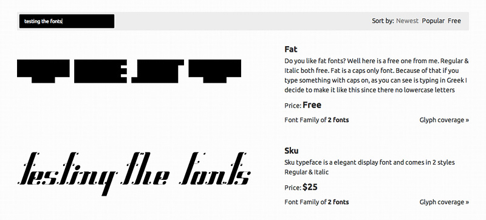
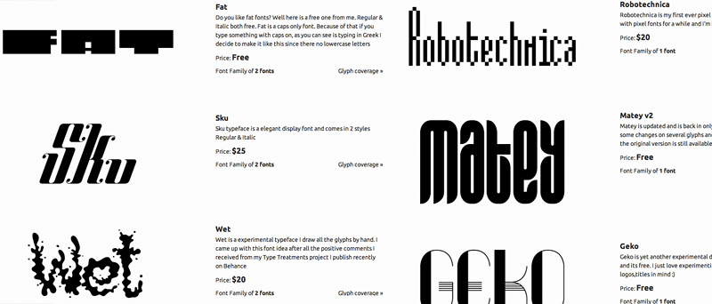
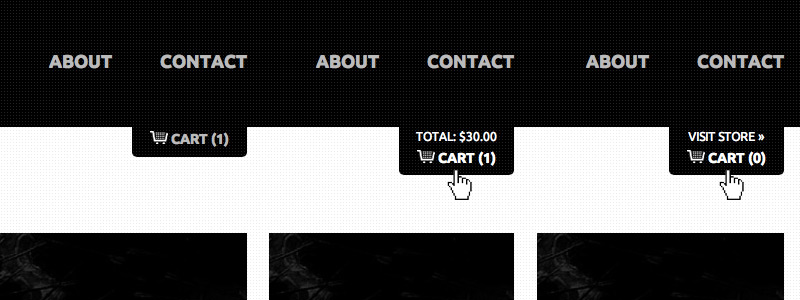
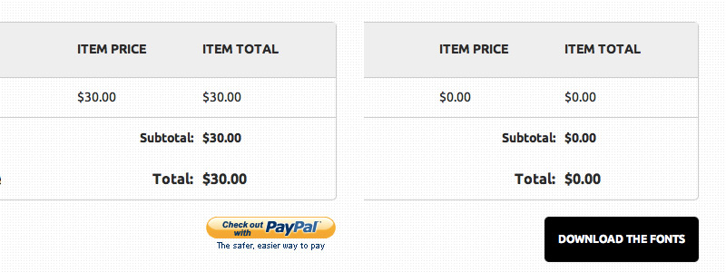

![sicanstudios logo]()
Alt Foundry
Alt-Foundry is a company that sells fonts. I was hired to designed and develop a complete e-commerce solution that would act as a platform for selling and promoting their fonts.
CMS Yes, Wordpress
Tools used Photoshop, Notepad, xHTML Strict 1.0, PHP, PHPurchase, CSS 3, jQuery
Visit Website“I wanted an e-commerce shop for selling my fonts. I was very pleased with the final result. Communication with him was excellent. His knowledge of user behavior helped me drive my sales up. It’s good to know whenever I have a problem, I can ask Alex.” - Andreas Leonidou
Concept Idea
The client requested from me to design and develop a complete e-commerce website for selling fonts. Having previous experience in creating e-commerce websites, I confidently accepted the project.
For the design of the website, he gave me complete freedom asking only the website to have a simple, minimalistic design. Having shown him the first drafts, he was very happy with the initial result.
{kind=link}
Functionality
Some functions that the website should have:
- subscribe to the weekly newsletter
- display latest fonts, sort fonts by “new”, “popular”, or “free”
- test fonts on-site, provide JavaScript alternative previews
- add, edit and remove products from cart (visual feedback)
- search for a product
- change quantity within the cart
- easy, one step checkout
- send e-mail confirmation on purchase, automatically generate receipts
- generate link and send the digital products
- provide statistics of purchases
- ability to add periodical discount codes
Production
The website was coded in valid xHTML Strict 1.0 and CSS 3. Once all the design elements were in place, it was then transcoded into PHP and saved as a WordPress theme. The website was search engine optimised (SEO) in order to reach the maximum number of visitors from search engines.
Browsing the Internet and researching other font selling websites like MyFonts, I decided that online testing of the fonts prior to purchasing is crucial for the buyer. It shows how the font and variations of the font will look with some user inputed text. I could not rely on browser’s webfont rendering to display the text because every browser and OS renders the fonts differently.

In order to depict an accurate representation of the font, images had to be used to show the custom text. Whenever the user typed in some text, using PHP I would have the server render a PNG image with the text using that particular font and send it back to be displayed. Coding this script proved to be the most challenging part of this project.
Moreover, if the font family consisted of only one font, in the fonts’ testing area, the font at different sizes (144px, 72px, 48px, 36px, 30px) would be displayed. If the font family consisted of more than one font, all the other different fonts (for example: bold and italic) would displayed with a “buy button” to buy the fonts individually if the user wanted.
Accessibility & Security
In matters of accessibility all images were added an alt tag, a “skip to content” link was added at the top making it easier for blind users to browse the website. On top of that semantic coding, a sitemap of the website, visual feedback (see next paragraph), commenting on code to make it easy for updating, and more.
When creating the testing of the fonts, it was necessary to add a no JavaScript alternative. Because testing the fonts was partially done using JS in case the user had JS disabled, the fallback would be to display the fonts as an image (without the possibility to test the fonts). In this way, the fonts can still be seen and bought if desired.

In the contact form, if the fields that were completed are incorrect, using jQuery, the erroneous fields would have a red coloured background and the website would request from the user to correct those fields. Moreover, checking the fields again in the PHP contact file is necessary, in case someone having disabled JavaScript tries to “trick” the system entering phony details.
Details
Great attention was given to small details. Small visual cues improving the user’s browsing experience can be seen throughout the website. For every button, link or image there is a default state, a hover state, and a click state, thus making the website responsive to the user’s actions. When clicking on an input field, like in the contact form, the field would change its colour, clearly pointing to the user which field they’re filling.
Whenever the user would add a product to the cart, a bar on top of their browser would appear saying that the product was added to the cart. Even if they would click to add the product to the cart again, the product would not be added twice.
Besides the message bar, the cart button in the header, prominent in all of the website’s pages, would display the amount of products the user has in their cart. If the user would hover the button, it would dropdown, displaying the total amount for the products. Once clicked, they would be taken to the cart page. The cart was designed with cookies, so the product would remain in the cart even after you would close the website (it would save the session until you closed the browser).

Shopping Cart
The cart features a simple one step checkout, no sign-up required. In the cart page, the user can remove products from the cart, add a discount code, or clear their cart. Once finished all they have to do is click to pay via PayPal.
If the fonts are free of charge, instead of the PayPal button, a download button is displayed. Once clicked, the fonts in the cart are downloaded as a ZIP file and the cart is cleared.

In conclusion this project was challenging but fun to complete. I enjoyed collaborating with Andreas and learned a lot from this project that will prove useful in the future.